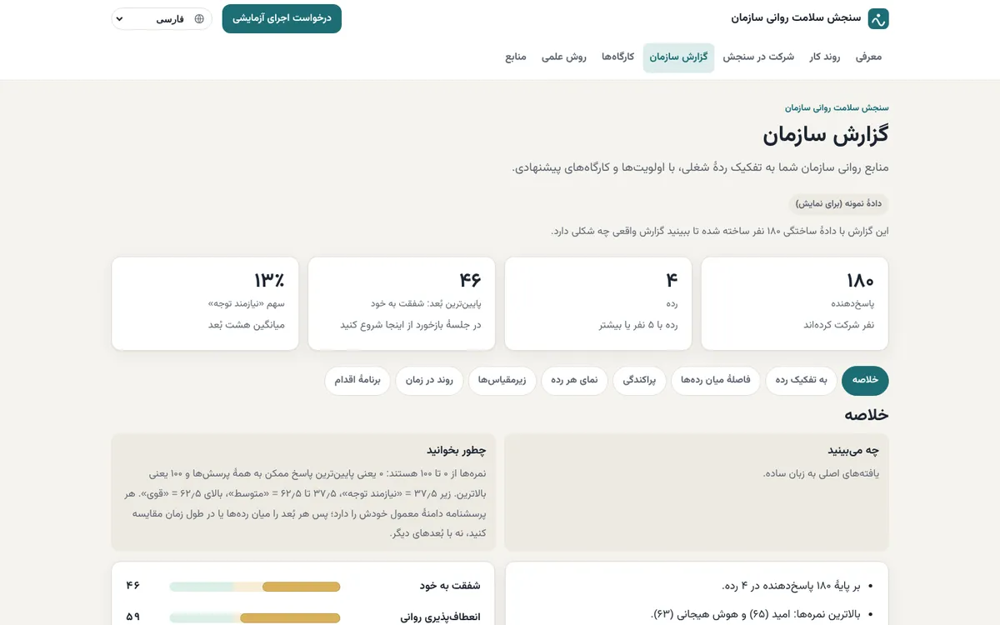

هوای تیم
نام محصول: Workplace Wellbeing Check
آخرین تغییر:
پیشبینی هوای درونی تیم. کارکنان ناشناس پاسخ میدهند؛ منابع انسانی گزارشی به تفکیک ردهٔ شغلی و برنامهٔ کارگاه میگیرد.
- نقش منبنیانگذار: تعریف مسئله، طراحی خدمت، روش امتیازدهی
- ساختهشدهپرسشنامه به ۹ زبان، گزارش به تفکیک رده، برنامهٔ کارگاه، ماشینحساب هزینهٔ غیبت
- وضعیتبه روانشناسها و مدیران منابع انسانی نشان داده شده؛ دنبال اولین سازمانها برای اجرای آزمایشی